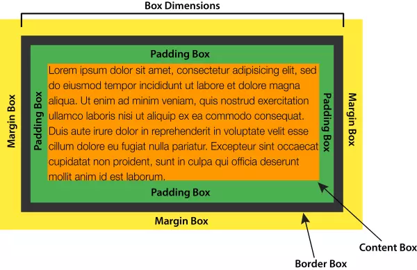

BOX MODEL

(Modelo de caja) Se llama así porque, en los navegadores, todo se construye a partir de cajas. Entonces, lo primero que debemos de entender, es que cada elemento que definimos en un documento HTML se mostrará en el navegador como una caja rectangular esta es la forma en que se representan todos los elementos, no existen elementos triangulares, redondos, poligonales etc. Todos los elementos en HTML por defecto son rectangulares ya que internamente el navegador dibuja un rectángulo. Cada caja está compuesta de cuatro partes (o áreas), definidas por sus respectivos límites: límite de contenido (content edge), límite de relleno (padding edge), límite de borde (border edge) y límite de margen (margin edge). El área de contenido o content área, delimitada por el límite de contenido (Content edge en la imagen), contiene el contenido "real" del elemento, como texto, una imagen o un reproductor de video. Sus dimensiones son "content width" o ("content-box width") que hace referencia al ancho del contenido, y "content height" o ("content-box height") que hace referencia al alto. A menudo, tiene un color o una imagen de fondo. Si la propiedad box-sizing está definida como content-box (que es el valor por defecto) y el elemento es un "elemento de bloque", el tamaño del área de contenido puede definirse explícitamente con las propiedades width, min-width, max-width (en-US), height, min-height y max-height. El área de relleno o padding area, delimitada por el límite de relleno (Padding Edge en la imagen), extiende el área de contenido para incluir el relleno del elemento. Sus dimensiones son "padding-box width" para el ancho y "padding-box height" para el alto. El tamaño del relleno viene determinado por las propiedades padding-top, padding-right (en-US), padding-bottom, padding-left (en-US) y la propiedad resumida padding. El área de borde o border area, delimitada por el límite de borde (Border Edge en la imagen), extiende el área de relleno para incluir los bordes del elemento. Sus dimensiones son "border-box width" para el ancho y "border-box height" para el alto. El espesor de los bordes está determinado por la propiedad border-width y la propiedad resumida border. Si la propiedad box-sizing se establece como border-box, el tamaño del área de borde puede definirse explícitamente con los parámetros width, min-width, max-width (en-US), height, min-height, max-height. Cuando hay un fondo background-color o background-image establecido en una caja, éste se extiende hasta el límite exterior del borde (es decir, se extiende por debajo del borde en el orden Z). Este comportamiento, que es el que tiene por defecto, puede ser alterado con la propiedad CSS background-clip. El área de margen o margin area, delimitada por el límite de margen (Margin edge en la imagen), extiende el área de borde para incluir un área vacía, utilizada para separar al elemento del resto de sus vecinos. Sus dimensiones son "margin-box width" para el ancho y "margin-box height" para el alto. El tamaño del área de margen está determinado por las propiedades margin-top (en-US), margin-right, margin-bottom, margin-left (en-US) y la propiedad resumida margin. Cuando se produce un colapso de margen, el área de margen no está claramente definida ya que los márgenes se comparten entre cajas. Por último, tenga en cuenta que, para los elementos en línea no modificados, la cantidad de espacio ocupado (la contribución a la altura de la línea) está determinada por la propiedad line-height, aunque los bordes y el relleno sigan apareciendo alrededor del contenido.